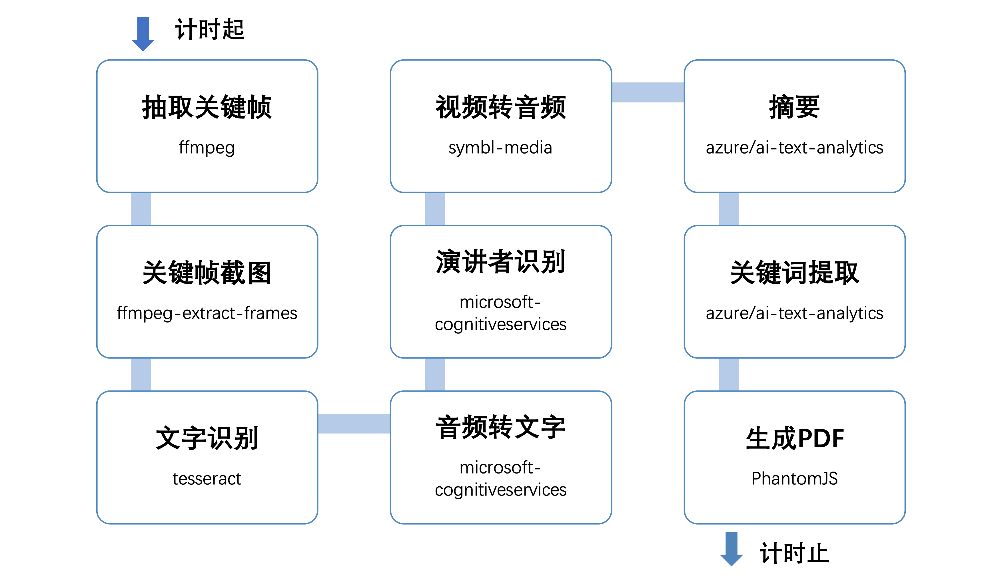

会议大纲生成系统
这是一套系统能为线上会议或视频课程在会后提供一份会议摘要，让参会人员一目十行地用最短时间回顾整体会议的主要内容，快速定位会议重点，节省员工或课程学员回看会议录屏的时间。
项目的主题是视频分析，将视频的音频和图像部分分别解析出文字大纲和画面截屏，最终产出一个图文结合的总结性大纲。

Azure Indexer
https://www.videoindexer.ai/
Azure Summarization
https://docs.microsoft.com/zh-cn/azure/cognitive-services/language-service/summarization/quickstart?tabs=document-summarization&pivots=programming-language-java
import { TextAnalyticsClient, AzureKeyCredential } from '@azure/ai-text-analytics';
const client = new TextAnalyticsClient(endpoint, new AzureKeyCredential(key));
async summarization() {
const actions = {
extractSummaryActions: [
{ modelVersion: 'latest', orderBy: 'Rank', maxSentenceCount: 15 },
],
};
const poller = await client.beginAnalyzeActions(documents, actions, 'en');
const resultPages = await poller.pollUntilDone();
for await (const page of resultPages) {
const extractSummaryAction = page.extractSummaryResults[0];
if (!extractSummaryAction.error) {
for (const doc of (extractSummaryAction as any).results) {
if (!doc.error) {
console.log('\tSummary:', doc.sentences);
} else {
console.error('\tError:', doc.error);
}
}
}
}
}
Azure Translate
https://docs.microsoft.com/zh-cn/azure/cognitive-services/translator/quickstart-translator?tabs=nodejs
import { v4 as uuidv4 } from 'uuid';
async translate(text: string, lan = 'zh'): Promise<string> {
return axios({
baseURL: endpoint,
url: '/translate',
method: 'post',
headers: {
'Ocp-Apim-Subscription-Key': key,
'Ocp-Apim-Subscription-Region': region,
'Content-type': 'application/json',
'X-ClientTraceId': uuidv4().toString(),
},
params: {
'api-version': '3.0',
from: lan === 'en' ? 'zh' : 'en',
to: [lan],
},
data: [
{
text,
},
],
data,
responseType: 'json',
})
.then(function (response) {
return response.data
.map((item) => item.translations[0].text)
.reduce((d, p) => d.concat(p), '');
})
.catch(function (error) {
console.error(error);
return 'error';
});
}
Azure KeyPhrases
https://docs.microsoft.com/zh-cn/azure/cognitive-services/language-service/key-phrase-extraction/quickstart?pivots=programming-language-javascript
const client = new TextAnalyticsClient(endpoint, new AzureKeyCredential(key));
async keyPhrases(text: string) {
const keyPhrasesInput = [text];
const keyPhraseResult = await client.extractKeyPhrases(keyPhrasesInput);
keyPhraseResult.forEach((document: ExtractKeyPhrasesSuccessResult) => {
console.log(`ID: ${document.id}`);
console.log(`\tDocument Key Phrases: ${document.keyPhrases}`);
});
}
code: ‘InvalidDocument’, message: ‘A document within the request was too large to be processed. Limit document size to: 5120 text elements. For additional details on the data limitations see https://aka.ms/text-analytics-data-limits’,
Azure SpeechToText
https://docs.microsoft.com/zh-cn/azure/cognitive-services/speech-service/get-started-speech-to-text?tabs=terminal&pivots=programming-language-javascript
import * as sdk from 'microsoft-cognitiveservices-speech-sdk';
const speechConfig = sdk.SpeechConfig.fromSubscription(key3, region2);
speechConfig.speechRecognitionLanguage = 'zh-CN';
async speechRecognition() {
const audioConfig = sdk.AudioConfig.fromWavFileInput(
readFileSync(process.cwd() + '/wav/song.wav'),
);
const speechRecognizer = new sdk.SpeechRecognizer(
speechConfig,
audioConfig,
);
speechRecognizer.recognizeOnceAsync((result) => {
switch (result.reason) {
case sdk.ResultReason.RecognizedSpeech:
console.log(`RECOGNIZED: Text=${result.text}`);
break;
}
speechRecognizer.close();
});
}
Azure Speakers Identification
https://docs.microsoft.com/en-us/azure/cognitive-services/speech-service/how-to-use-conversation-transcription?pivots=programming-language-javascript
const recognization = new Promise((resolve, reject) => {
const conversation = sdk.Conversation.createConversationAsync(
speechTranslationConfig,
'myConversation',
);
const audioConfig = sdk.AudioConfig.fromWavFileInput(
readFileSync(`${process.cwd()}/wav/${file}.wav`),
);
const transcriber = new sdk.ConversationTranscriber(audioConfig);
transcriber.joinConversationAsync(conversation, function () {
transcriber.transcribed = function (s, e) {
const { text, speakerId, offset } = e.result;
if (speakerId && speakerId.includes('Guest')) {
console.log(
'(transcribed) text: ' + text,
'(transcribed) speakerId: ' + speakerId,
);
}
};
transcriber.startTranscribingAsync(
function () {
console.log('starting transcription');
},
function (err) {
console.trace('err - starting transcription: ' + err);
},
);
});
});
FFmpeg — video to audio
1.ffmpeg-nodejs
https://ffmpeg.org/ffmpeg.html
https://www.npmjs.com/package/ffmpeg-nodejs
npm i cmake-js -g
brew install cmake
npm i ffmpeg-nodejs
报错：Policy CMP0042 is not set: MACOSX_RPATH is enabled by default.
npm cache ls ffmpeg-nodejs
下载 https://registry.npmjs.org/ffmpeg-nodejs/-/ffmpeg-nodejs-0.4.4.tgz
npm install 报错：nasm/yasm not found or too old. Use —disable-x86asm for a crippled build.
下载 https://tortall.net/projects/yasm/releases/yasm-1.2.0.tar.gz
cd yasm-1.2.0
./configure
make
sudo make install
yasm --version
放弃
2.symbl-media
brew install ffmpeg
https://www.npmjs.com/package/symbl-media
npm i symbl-media
const video_addr = process.cwd() + '/video/tschina.mp4';
const output_addr = process.cwd() + '/wav/tschina.wav';
await transcodeMediaFile(video_addr, output_addr, 'wav')
3.ffmpeg-extract-frames
npm i ffmpeg-extract-frames-quality
await extractFrames({
input: video_addr,
output: output_img,
offsets: [1000, 2000, 650000],
});
ffmpeg -i ./video/dm.mp4 -filter:v “select=’gt(scene,0.1)’,showinfo” -f null - 2>&1
OCR
brew install tesseract
brew install tesseract-lang
tesseract -v
tesseract /Users/jyu36/code/sharktank/send-pdf/img/ocr1.png /Users/jyu36/code/sharktank/send-pdf/img/result -l eng
tesseract /Users/jyu36/code/sharktank/send-pdf/img/test-1.jpg /Users/jyu36/code/sharktank/send-pdf/img/result -l chi_sim
npm install node-tesseract-ocr
import * as tesseract from 'node-tesseract-ocr';
tesseract
.recognize(source_img, {
lang: 'eng',
})
.then((text) => {
console.log('Result:', text);
})
.catch((error) => {
console.log(error.message);
});
html-pdf
npm install — save html-pdf npm install — save ejs
踩坑：”Error”,”errorMessage”:”write EPIPE”
yum -y install fontconfig
fc-list
fc-list :lang-zh
fc-list :lang=en
mkdir /usr/share/fonts/chinese
下载 雅黑字体 msyh.ttf
mv -f /home/v-jyu/fonts/* /usr/share/fonts/chinese/
fc-list :lang-zh
attachment/exportData.ts
import * as pdf from 'html-pdf';
import * as ejs from 'ejs';
export default async function savePDF(meetingData, filename): Promise<string> {
const run = new Promise((resolve, reject) => {
let html;
const template = process.cwd() + '/email-template/datamail.code.ejs';
ejs.renderFile(template, { meetingData }, (err, data) => {
html = data;
});
const options = { format: 'Letter' };
pdf
.create(html, options)
.toFile(`pdf/${filename}.pdf`, function (err, res) {
if (err) {
reject(err);
}
resolve(res.filename);
});
});
return run.then((data: string) => {
return data;
});
}
emaili.service.tschina
const outlinefile = await savePDF(meetingData, 'courseOutline');
await this.mailerService.sendMail({
to,
subject,
template: 'datamail.code.ejs',
context: { meetingData },
attachments: [
{
filename: '会议大纲.pdf',
path: outlinefile,
},
],
});
email-template/datamail.code.ejs
<html>
<body>
<div class="container">
<p class="title"><%=locals.meetingData.title%></p>
<% for(var i =0; i < locals.meetingData.content.length; i++){ %>
<p class="sub-title"><%=locals.meetingData.content[i].keyPhases[0]%></p>
<img src="https://xxx.cn/static/<%=locals.meetingData.content[i].shot%>.jpg" />
<p class="content"><%=locals.meetingData.content[i].summary%></p>
<% } %>
</div>
</body>
</html>